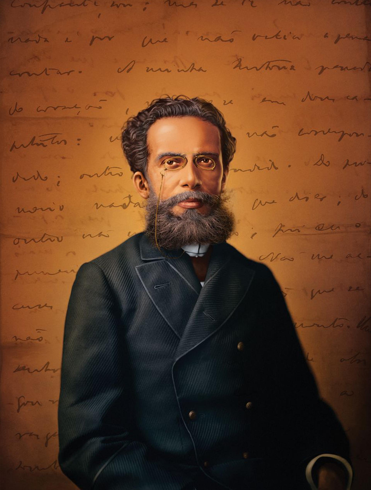
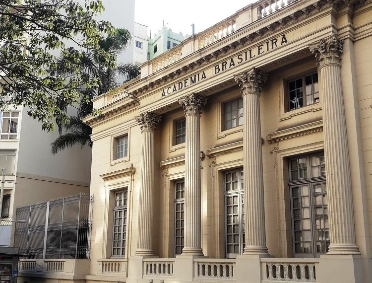

Curiosidades

1º Origens Singulares
Nascido em 1839 no Rio de Janeiro, Machado de Assis tinha uma origem singular. Filho de um mulato liberto e de uma portuguesa, sua ascendência mista foi incomum para a época. Essa mistura étnica influenciou sua visão única da sociedade brasileira, que ele explorou em suas obras literárias.
2º Autodidata e ascensão literária
Apesar das limitações de sua educação formal, Machado de Assis se tornou um dos maiores escritores da língua portuguesa. Sua erudição foi adquirida principalmente por meio da leitura voraz e do estudo autodidata, uma conquista notável que o elevou ao status de ícone literário.
3º Líder literário
Machado foi não apenas um pioneiro da literatura, mas também um líder cultural. Como o primeiro presidente da Academia Brasileira de Letras, ele desempenhou um papel fundamental na promoção e no desenvolvimento da literatura nacional.
4º Mestre da forma curta
Embora seja mais conhecido por seus romances monumentais, como "Dom Casmurro" e "Memórias Póstumas de Brás Cubas", Machado de Assis também era um mestre do conto. Seus contos frequentemente desvendam os aspectos mais profundos e sombrios da alma humana, enquanto satirizam a sociedade e suas convenções.
5º Legado perdurável
A morte de Machado de Assis em 1908 não diminuiu sua influência. Seu legado literário continua a inspirar gerações de escritores e leitores, tanto no Brasil quanto além. Sua capacidade de sondar as complexidades da condição humana e de retratá-las com sutileza e perspicácia garante sua posição como um dos maiores escritores de todos os tempos.